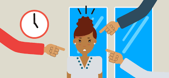

Introduccion
Las relaciones y las experiencias que viven los niños y adolescentes en la familia, escuela y el barrio son imprescindibles para un buen desarrollo emocional, social y cognitivo.
Sin embargo, la convivencia y las relaciones humanas, implican conflictos y perturban estos ambientes seguros y cálidos. Uno de estos conflictos, que despierta gran alarma social, es la violencia o acoso escolar que se genera entre niños o niñas o adolescentes en los colegios e institutos
Acoso escolar
¿Que es el acoso escolar?
El acoso escolar (también conocido como hostigamiento escolar, matonaje escolar, maltrato escolar o en inglés school bullying) es cualquier forma de maltrato psicológico, verbal o físico producido entre estudiantes de forma reiterada a lo largo de un tiempo determinado tanto en el aula, como a través de las redes sociales, con el nombre específico de ciberacoso. Estadísticamente, el tipo de violencia dominante es el emocional y se da mayoritariamente en la clase y en los patios escolares. Los protagonistas de los casos de acoso escolar suelen ser niños y niñas en proceso de entrada en la adolescencia, siendo ligeramente mayor el porcentaje de niñas en el perfil de víctimas.
Este tipo de violencia escolar se caracteriza, por tanto, por una reiteración encaminada a conseguir la intimidación de la víctima, implicando un abuso de poder en tanto que es ejercida por un agresor más fuerte (ya sea esta fortaleza real o percibida subjetivamente) que aquella. El sujeto maltratado queda, así, expuesto física y emocionalmente ante el sujeto que lo maltrata, generándose como consecuencia una serie de secuelas psicológicas (aunque estas no formen parte del diagnóstico); es común que el acosado viva aterrorizado con la idea de asistir a la escuela y que se muestre muy nervioso, triste y solitario en su vida cotidiana. En algunos casos, la dureza de la situación puede acarrear pensamientos sobre el suicidio e incluso su materialización, consecuencias propias del hostigamiento hacia las personas sin límite de edad.
Tipos de acoso
Bloqueo social
Agrupa las acciones de acoso escolar que buscan bloquear socialmente a la víctima. Todas ellas buscan el aislamiento social y su marginación impuesta por estas conductas de bloqueo.
Son ejemplos las prohibiciones de jugar en un grupo, de hablar o comunicar con otros, o de que nadie hable o se relacione con él, pues son indicadores que apuntan un intento por parte de otros de quebrar la red social de apoyos del niño.
Se incluye dentro de este grupo de acciones el meterse con la víctima para hacerle llorar. Esta conducta busca presentar al niño socialmente, entre el grupo de iguales, como alguien flojo, indigno, débil, indefenso, estúpido, llorica, etc. El hacer llorar al niño desencadena socialmente en su entorno un fenómeno de estigmatización secundaria conocido como mecanismo de chivo expiatorio. De todas las modalidades de acoso escolar es la más difícil de combatir en la medida que es una actuación muy frecuentemente invisible y que no deja huella. El propio niño no identifica más que el hecho de que nadie le habla o de que nadie quiere estar con él o de que los demás le excluyen sistemáticamente de los juegos.

Hostigamiento
Agrupa aquellas conductas de acoso escolar que consisten en acciones de hostigamiento y acoso psicológico que manifiestan desprecio, falta de respeto y desconsideración por la dignidad del afectado. El desprecio, el odio, la ridiculización, la burla, el menosprecio, los motes, la crueldad, la manifestación gestual del desprecio, la imitación burlesca son los indicadores de esta escala.
Manipulación social
Agrupa aquellas conductas de acoso escolar que pretenden distorsionar la imagen social del niño y “envenenar” a otros contra él. Con ellas se trata de presentar una imagen negativa, distorsionada y cargada negativamente sobre la víctima. Se cargan las tintas contra todo cuanto hace o dice la víctima, o contra todo lo que no ha dicho ni ha hecho. No importa lo que haga, todo es utilizado y sirve para inducir el rechazo de otros. A causa de esta manipulación de la imagen social de la víctima acosada, muchos otros niños se suman al grupo de acoso de manera involuntaria, percibiendo que la víctima merece el acoso que recibe, incurriendo en un mecanismo denominado “error básico de atribución”.

Coacción
Agrupa aquellas conductas de acoso escolar que pretenden que la víctima realice acciones contra su voluntad. Mediante estas conductas quienes acosan al niño pretenden ejercer un dominio y un sometimiento total en contra de su voluntad.
El que la víctima haga esas cosas contra su voluntad proporciona a los que fuerzan o tuercen esa voluntad diferentes beneficios, pero sobre todo poder social. Los que acosan son percibidos como poderosos, sobre todo, por los demás que presencian el doblegamiento de la víctima. Con frecuencia las coacciones implican que el niño sea víctima de vejaciones, abusos o conductas sexuales no deseadas que debe silenciar por miedo a las represalias sobre sí o sobre sus hermanos.
Exclusión social
Agrupa las conductas de acoso escolar que buscan excluir de la participación al niño acosado. El “tú no”, es el centro de estas conductas con las que el grupo que acosa segrega socialmente al niño. Al ningunearlo, tratarlo como si no existiera, aislarlo, impedir su expresión, impedir su participación en juegos, se produce el vacío social en su entorno.

Intimidación
Agrupa aquellas conductas de acoso escolar que persiguen amilanar, amedrentar, apocar o consumir emocionalmente al niño mediante una acción intimidatoria. Con ellas quienes acosan buscan inducir el miedo en el niño. Sus indicadores son acciones de intimidación, amenaza, hostigamiento físico intimidatorio, acoso a la salida del centro escolar.
Amenaza a la integridad
Agrupa las conductas de acoso escolar que buscan amilanar mediante las amenazas contra la integridad física del niño o de su familia, o mediante la extorsión.

Causas del acoso escolar
El agresor: características psicológicas y entorno familiar
Aunque el acosador escolar no tiene por qué padecer ninguna enfermedad mental o trastorno de la personalidad grave, presenta normalmente algún tipo de psicopatología. Fundamentalmente, presenta ausencia de empatía y algún tipo de distorsión cognitiva. Generalmente suele ser una persona que ha visto violencia con regularidad, se acostumbra a ella o en su casa sus familiares se tratan agresivamente y lo tratan inadecuadamente a él.
El entorno escolar
Se puede dar el caso de que la ausencia en clase (o, en general, en el centro educativo) de un clima adecuado de convivencia pueda favorecer la aparición del acoso escolar. La responsabilidad al respecto oscila entre la figura de unos profesores que no han recibido una formación específica en cuestiones de intermediación en situaciones escolares conflictiva, y la disminución de su perfil de autoridad dentro de la sociedad moderna.
Consecuencias del acoso escolar
Una investigación realizada en 2014 en la la King’s College London descubrió que los efectos psicológicos negativos que sufren las personas con bullying permanecen durante 40 años después de haber sido víctima de acoso. Esto nos debe hacer reflexionar sobre el grave impacto psicológico del acoso en el resto de la vida de la persona afectada, presentando peores indicadores de su salud mental y física y un peor desempeño cognitivo respecto a los individuos que no sufrieron acoso. ejemplos:
Estrés
Las víctimas de acoso escolar presentan estrés no solo durante la época escolar sino también años después. Esto se desprende de un estudio llevado a cabo en la Tufts University y que revela que las personas afectadas segregan más cortisol, una hormona directamente implicada en la sensación de estrés.
Ansiedad y depresión
Otra investigación, en este caso de la Universidad de Duke, detectó que las víctimas de acoso tenían una mayor probabilidad de sufrir trastornos como la agorafobia, el trastorno de ansiedad generalizado y las crisis de pánico. También presentaban mayores tasas de depresión y de aislamiento social.
Somatizaciones
También pueden presentar trastornos psicosomáticos. Así se detectó en un informe publicado por Randy y Lori Sansone en el año 2008.
Suicidio
En el mismo estudio realizado en Duke, se encontró una mayor probabilidad de suicidios en estas personas. El primer caso de suicidio de una persona que sufría bullying fue el del joven español Jokin, que a sus 14 años decidió poner fin a su vida después de llevar años sufriendo abusos y hostigamiento en su colegio en la localidad de Hondarribia.
Problemas en la socialización y en el futuro laboral
Las víctimas de acoso en la escuela presentan, estadísticamente, peores indicadores en lo que refiere a su calidad de vida familiar y en su capacidad adquisitiva en su vida adulta. También pueden sufrir un peor desempeño en sus habilidades sociales y comunicativas, tal como se indicó en este estudio de Claire Fox y Michael Boulton publicado en la British Psychological Society.
Nuestro equipo
Nuestro equipo para este proyecto esta conformado por:

Hector Diego Espinoza Rivera
"va X peñasco"
Jesús Leonardo Sánchez Acosta
"Es mejor equivocarse, que quedarte con la duda"

Jonathan josue beltran basurto
"La inteligencia me persigue pero yo soy más rápido"
Jesús Daniel Samaniego encinas
"Tendrás mi respeto, pero no el nivel"
Jesús silverio villareal matrecito
"Que no te dejen Tirado, demuestra que puedes y levántate""
Alexis daniel martinez fuentes
"Si Dios hubiera querido que nos bañaramos diario seríamos peces"